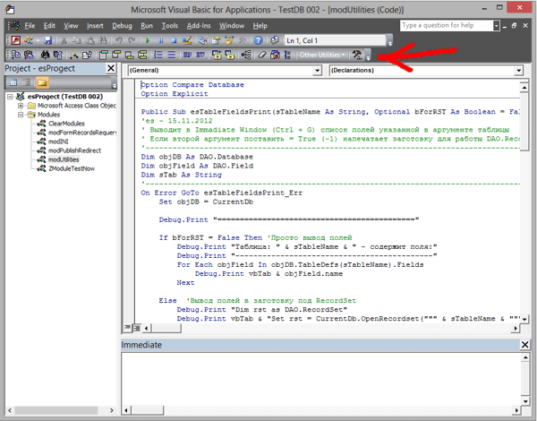
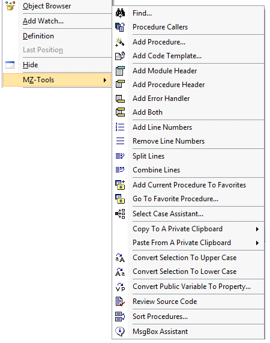

Цитирую разработчика:
http://www.mztools.com/index.aspx
MZ-Tools has a single goal: To make your everyday programming life easier.
As an add-in to several Integrated Development Environment (IDEs) from
Microsoft, MZ-Tools adds new menus and toolbars to them that provide
many new productivity features.
It allows you to write code, find code, design your forms, document your
applications, and review their quality much faster than you do it
today. It saves you valuable time each and every time you use it.
И это факт!
Интерфейс только англоязычный, но всё легко и просто и может "тонко" настраиваться.
Автоматически добавлять "рыбы-заготовки" для создания процедур,
функций, обработчиков событий и ошибок с правильным наименованием
переменных по венгерской системе.
Копировать элементы управления на пользовательских формах вместе с их кодом.
Делать закладки (Favorites) на процедуры и быстро к ним переходить в большом проекте.
Разбивать длинные строки кода на несколько и собирать обратно (split и combine lines).
Выдавать подробную статистику по проекту (кол-во строк кода, процедур, элементов на формах и т.д.)
Проверять проект на наличие неиспользуемых переменных и процедур (Review Source)
Создать свою базу заготовок кода (Code Templates) для типичных случаев и быстро вставлять их потом в новые макросы.
Автоматически создавать длинную и страшную строку для подключения к внешним источникам данных по ADO.
Вешать горячие клавиши на любую функцию из надстройки.
После установки в редакторе VBE в меню Tools появится подменю MZ-Tools и
новая панель инструментов для быстрого вызова тех же функций:

Меню:

Achtung!
Office 64-bit not supported!

(1 172 kB)